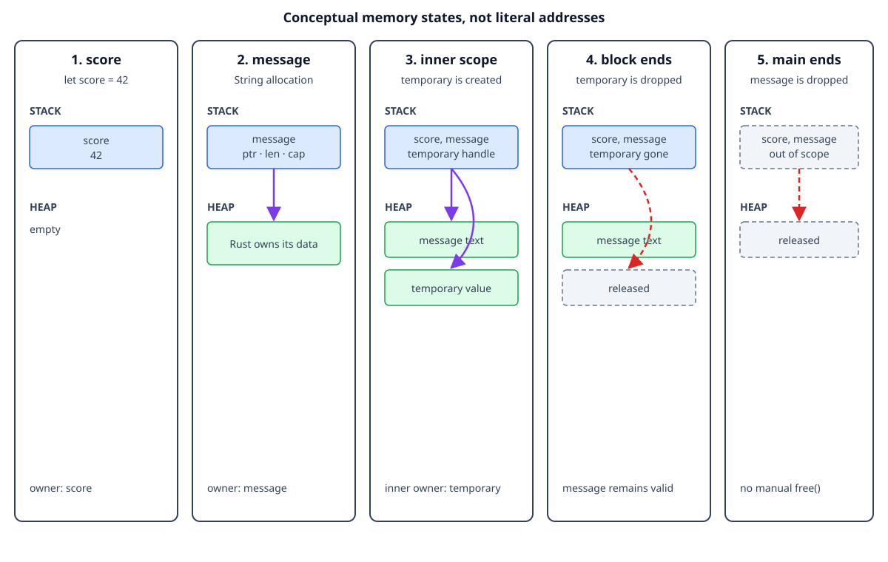

Values, variables, and scope
By the end, you will be able to
- Distinguish a value from the variable that owns it.
- Explain the difference between stack and heap storage at a high level.
- Predict when a variable leaves scope and its value is dropped.
Values and variables
A value is data such as 42 or the text stored in a String. A variable
is a name that lets the program use a value:
let score = 42;
Here, 42 is the value and score is the variable that owns it. By default,
variables are immutable, so use let mut when the binding itself must change:
let mut score = 42;
score = 43;
Scope
Scope is the part of the program where a variable is valid. A variable starts
when its let statement runs and ends at the closing brace of its block.
fn main() {
let outside = "available here";
{
let inside = "available only in this block";
println!("{outside}, {inside}");
}
println!("{outside}");
// println!("{inside}"); // would fail: `inside` is out of scope
}
Rust drops a value when its owner leaves scope. For a small stack value, this
usually means the storage is no longer needed. For a heap-backed value such as
String or Vec<T>, Rust also releases the heap allocation automatically.
flowchart TD
A[Enter block] --> B[Create owner and value]
B --> C[Use value]
C --> D[Leave block]
D --> E[Drop value]
E --> F[Release owned resources]Stack and heap, briefly
The stack is fast storage for values with a known, simple layout, such as
integers. The heap stores data whose size can change or whose ownership must
outlive a single expression. A String value keeps a small handle on the stack
and its text in a heap allocation.
The important ownership lesson is that the variable still owns the complete
String, including the heap data. When the variable leaves scope, Rust cleans
up the allocation without a manual free call.
The same rule applies to Vec<T>. A vector stores its elements in a heap
allocation, while the Vec handle on the stack tracks the allocation. The
variable owns both the handle and the elements it contains:
{
let mut numbers = vec![1, 2, 3];
numbers.push(4);
println!("numbers: {numbers:?}");
} // numbers and its heap allocation are dropped here
Expected output:
numbers: [1, 2, 3, 4]
The vector is automatically cleaned up when the block ends. No manual deallocation is needed.
Why heap-backed types matter
Real programs often need data whose size is known only while the program is
running: user input, a file, a network response, or a collection of records.
String, Vec<T>, and similar types keep that changing data on the heap while
their small ownership handle stays on the stack.
That extra allocation is useful because the data can grow, but it also creates resources that must have one clear owner. Rust's ownership rules make sure the allocation is released exactly once and cannot be used after its owner has gone away. Borrowing then lets another function temporarily read or modify the data without taking ownership:
fn add_label(labels: &mut Vec<String>) {
labels.push(String::from("Rust"));
}
fn main() {
let mut labels = vec![String::from("safe")];
add_label(&mut labels); // borrowed temporarily, then returned to `labels`
println!("{labels:?}");
} // `labels` owns the vector and its strings until cleanup
Expected output:
["safe", "Rust"]
This is why heap-backed types are central to ownership and borrowing: they let
Rust support flexible, useful data structures without requiring manual
free, while still making the lifetime and access rules explicit.
Complete runnable example
The lesson displays the same source file that you can compile from the matching
examples/ directory. Keeping one source file prevents the lesson and demo
from drifting apart.
fn main() {
let score = 42;
let message = String::from("Rust owns its data");
println!("score: {score}");
println!("message: {message}");
{
let temporary = String::from("temporary value");
println!("inside: {temporary}");
}
println!("outside: still in scope");
}
Memory after each step
The diagrams below are conceptual. They explain ownership and lifetime, not literal addresses, stack offsets, allocator metadata, or an exact compiler layout.

Step 1: create score
let score = 42;
| Area | State |
|---|---|
| Stack | score owns the integer value 42. |
| Heap | No allocation is needed for this integer. |
| Scope | score is valid until the end of main. |
Step 2: create message
let message = String::from("Rust owns its data");
| Area | State |
|---|---|
| Stack | message owns a String handle containing a pointer, length, and capacity. |
| Heap | The string characters are stored in an allocation owned by message. |
| Scope | message is valid until the end of main. |
Step 3: enter the inner scope
{
let temporary = String::from("temporary value");
}
| Area | State |
|---|---|
| Stack | score, message, and temporary are valid in the inner block. |
| Heap | There are separate allocations for message and temporary. |
| Scope | temporary is valid only inside the inner block. |
Step 4: leave the inner scope
When the closing brace runs, temporary leaves scope first:
| Area | State |
|---|---|
| Stack | The temporary binding is gone. score and message remain. |
| Heap | The allocation owned by temporary is released. message remains allocated. |
| Scope | Code after the block can still use score and message. |
Step 5: leave main
At the end of main, Rust drops the remaining owners automatically:
| Area | State |
|---|---|
| Stack | score and the message handle leave scope. |
| Heap | The allocation owned by message is released. |
| Result | No manual free call is needed. |
Try it
The demo creates a stack integer, a heap-backed String, and an inner scope.
rustc examples/02-ownership-and-borrowing/01-values-variables-scope/main.rs \
-o /tmp/rust-scope-demo
/tmp/rust-scope-demo
Expected output:
score: 42
message: Rust owns its data
inside: temporary value
outside: still in scope
Exercise
- Change
scoretolet mut score = 42and update it to43. - Move
messageinto the inner block and see which line stops compiling. - Restore the program and add a second
Stringinside the inner block.
Checkpoint 1
What is the scope of a variable?
Checkpoint 2
What happens when an owner leaves its scope?
Checkpoint 3
Where are the elements of a growing Vec<T> usually stored?
Checkpoint 4
What does numbers.push(4) do in the example?
Next
Continue with move semantics, where assignment and function calls can transfer ownership of heap-backed values.